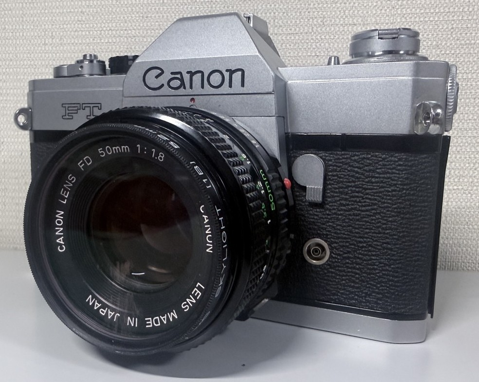
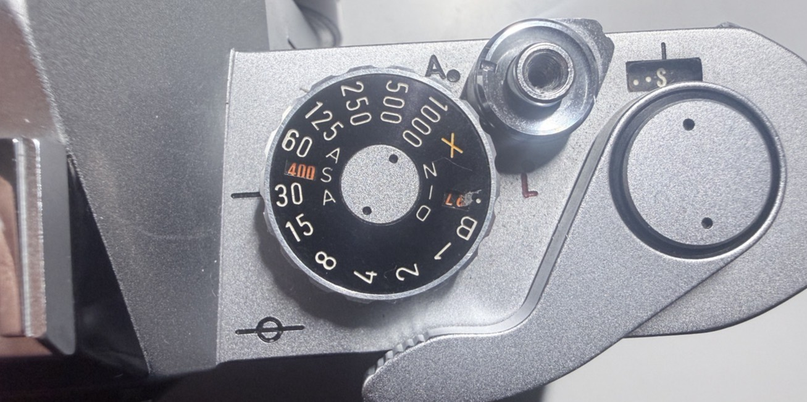
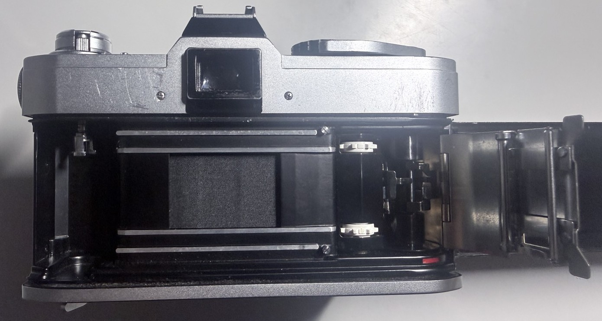
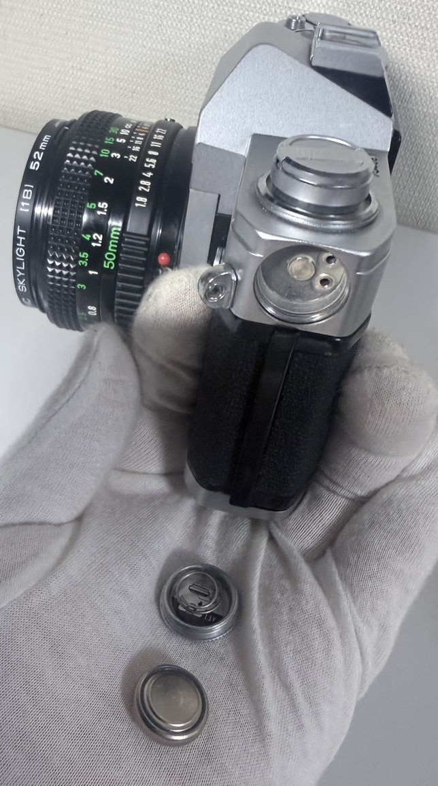

【canon FT】
【機械式の個人的トップ】
基本情報
| メーカー | 【canon】 |
|---|---|
| 機種名 | 【canon FT(QL)】 |
| 発売年 | 【1966年】 |
| 使用フィルム | 【35mmフィルム】 |
| 撮影方式 | 【35mmフィルム一眼レフ】 |
| レンズマウント | 【FL・FDレンズ】 |
| シャッター | 【機械式・B‐1秒～1/1000秒‐X（X接点）】 |
| 露出 | 【TTL絞り込み測光によるマニュアル露出】 |
外観

(レンズはAV-1についてきたやつ)
機械式（銀塩）のカメラなだけあって見た目も金属のテカテカの感じです。 個人的にはこんな感じのカメラ、めっちゃ好みです。 軍艦部もごちゃごちゃしておらず、すっきりしています。
特徴
個人的には”無名”なのが最大の特徴だと思っています。
おそらく”機械式”を望むのであればニコンに流れるでしょうし、
キャノンの機械式を望むのであれば、FT”b”に行くでしょう。
（そもそもFTbってキャノン機械式の中だとほぼほぼ避けては通れないですからね…）
なのでそんな名機、FTbの前期型ってか一世代前の機種なんてほぼほぼ見向きもされないんですよね。
ネットとか見ても明らかに記事が少なかったりと
傷口を塩で塗りたくって死体蹴りをするような、そんな気分になりますね・・・。
まぁとにかく、有名なメーカーの奴なくせにかわいそうなことにマニア層からも投げ捨てられてる
かわいそうなカメラってことはわかったと思います。
スペック
スペックは名機名機と持て囃されるFTbの改良前の機種なだけあって、結構優れてます。
シャッタースピードはB（バルブ）‐1秒～1/1000秒‐X（ストロボ用の奴）までありますし、

ミラーアップの機能もあります。測光はTTL絞り込み測光によるマニュアル露出で、巻き上げは勿論手動ですね。 フィルムを入れるときはこの時のCanonの流行り？QL（クイックローディング）ですね。

個人的にはあんまり得意ではないのですが・・・。 こんな感じで測光は機械がやってくてますが大体手動なんで 後で話しますがとにかく”撮っている”感がやばいです。やっぱり機械式は正義なんじゃぁ～。
実際に使ってみて
南海道遠征で実際にフィルムを通して撮影しました。
（この旅行について詳しくは、南海道遠征記事をご覧ください。）
使用したフィルムはFUJIのISO400のカラーフィルムなんですが・・・・。
まだ現像出してないんですよねぇ・・・・。
また出したら書き直します。
撮影について
正直、全部やりたくない・撮るだけがいいならば1990年代の電子式カメラが良いでしょう。
ですがこのカメラの魅力は”手動”にこそあると筆者は考えます。
自分でピントを合わせ、絞り込んで、シャッタースピードを合わせて、巻き上げて、”撮影する”。
こうした一連の”撮影”がこのカメラ、引いては[機械式]にはあると思います。
そして、あまり考えたくはないですが耐久性というものがあります。
機械式というのは名称の通り、基本的に”金属”なんかでできてます。
なので超頑張れば一般人でも新しい部品の製作が可能です。
（FTは露出に電池を使いますが他社製品だとそれすら必要ない機種もありますからね・・・）
反対に1990年代とかだと電子部品とかだったりで便利な反面、壊れたらおしまい的な面もあります。
無論お金を掛けたりすれば治るのでしょうが、そこまで・・・ってのもあります。
（間違ってるかもですけど）現状でも共食い修理（ほかの製品とかから部品を取る修理）がかなりを占めているでしょうし。
なので今は動くけど・・・的な製品が普通に転がってたりします。
なのでそういった面で、永くカメラと添い遂げたいのであればCanonFTなどの
[機械式フィルムカメラ]、候補に挙げてもよいのでないでしょうか？
入手について
このカメラは、愛知県名古屋市名東区新宿１丁目１５２にある大塚商会さんで購入しました。(2026/5/31購入)
大塚商会様のホームページはこちらから
もともとたまたま記事として流れてきた
これ
を見て”カメラ屋巡り”ってのをやってみようかなーと思い立ち、親に車を出してもらいながら
巡ってたわけなんですよ。
ですけど、根本的なことを忘れてました。「値段」が・・・。”高すぎる！（学生目線）”
と。なのでいいカメラとかあっても値段がなぁ・・・。って感じで大塚カメラ行ったら、
ジャンク品が結構転がってたんですよね。でこのFTがあったってことですね。
元は”露出がダメ”って言って買ったんですけど、買ってから試しに電池入れてみたら
普通に動いたんでそのまま使ってます。

金額
カメラ本体で多分4000円。電池代・・は覚えてないですが数百円ですね。
電池はMR9水銀電池ですね。
無論現代では水源電池なぞ販売・製造するらも行われていないので互換品を購入しましょう。
（公式は1.5Vなので電圧も気を付けましょう。）
現在の状態
今のところ、なにも問題なないですね。 これからも末永く使っていきたい。
まとめ
このカメラ、私の持ってる機械式カメラの中では唯一動くんですよね。 機械式、壊れることも少ない？でしょうしこれからも長く、永く使い込んでいきたいです。